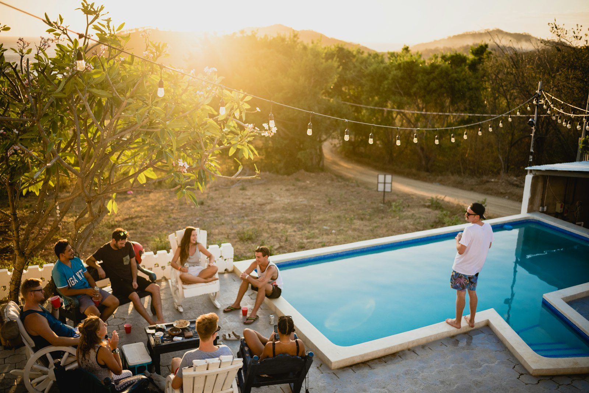
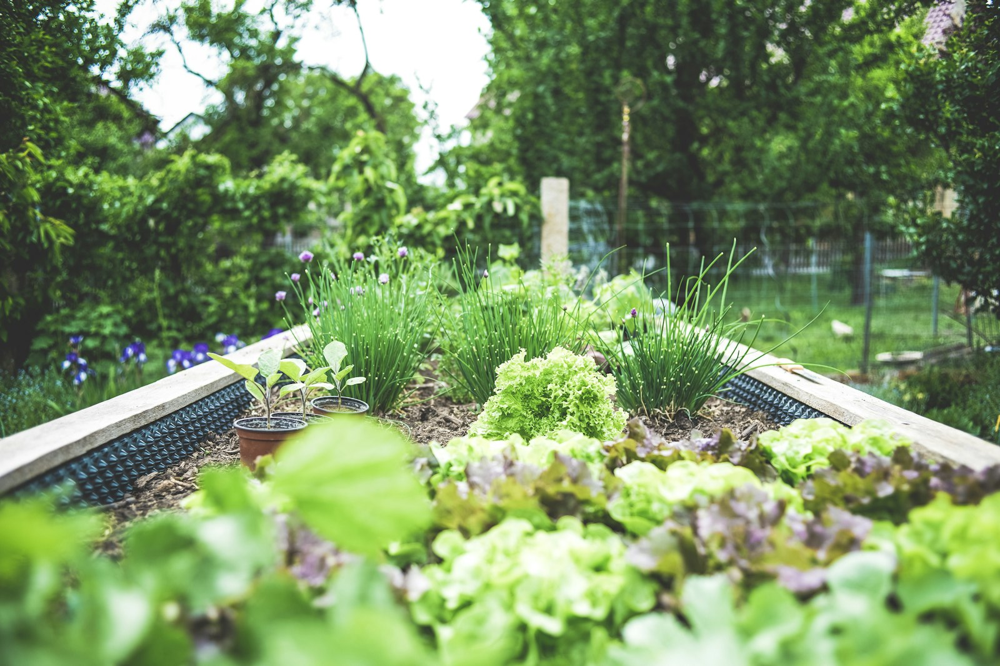

Wat ik voor je doe
Van eerste idee tot een tuin waar je echt buiten wílt zijn. Samen kijken we wat past bij jou, je huis en de plek.

Tuinadvies
Praktisch advies aan huis: beplanting, indeling en onderhoud. Snel inzicht in wat er mogelijk is.

Tuinontwerp
Een doordacht ontwerp op maat voor stadstuin, nieuwbouwtuin of landschapstuin — functioneel én mooi.

Aanleg
Ontwerp laten uitvoeren? Aanleg door een erkende hovenier is mogelijk, van schets tot klare tuin.